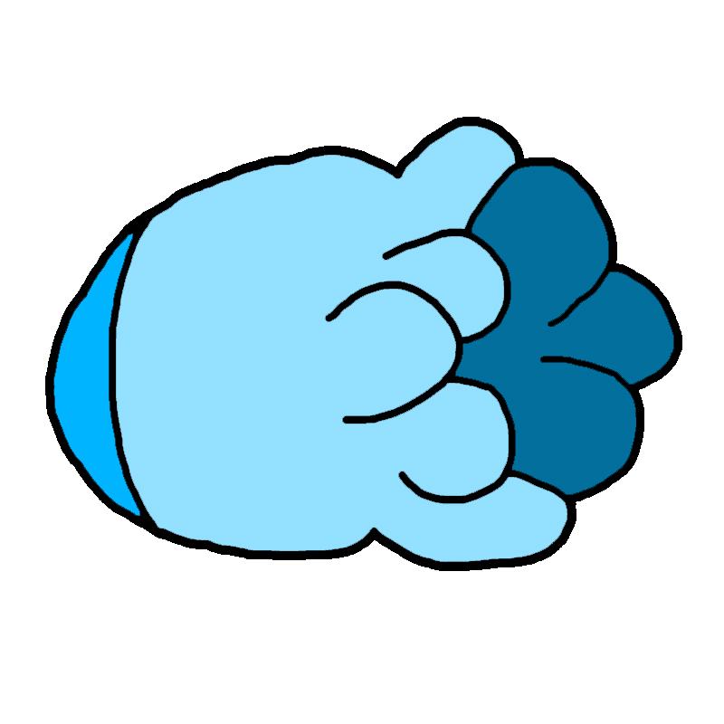
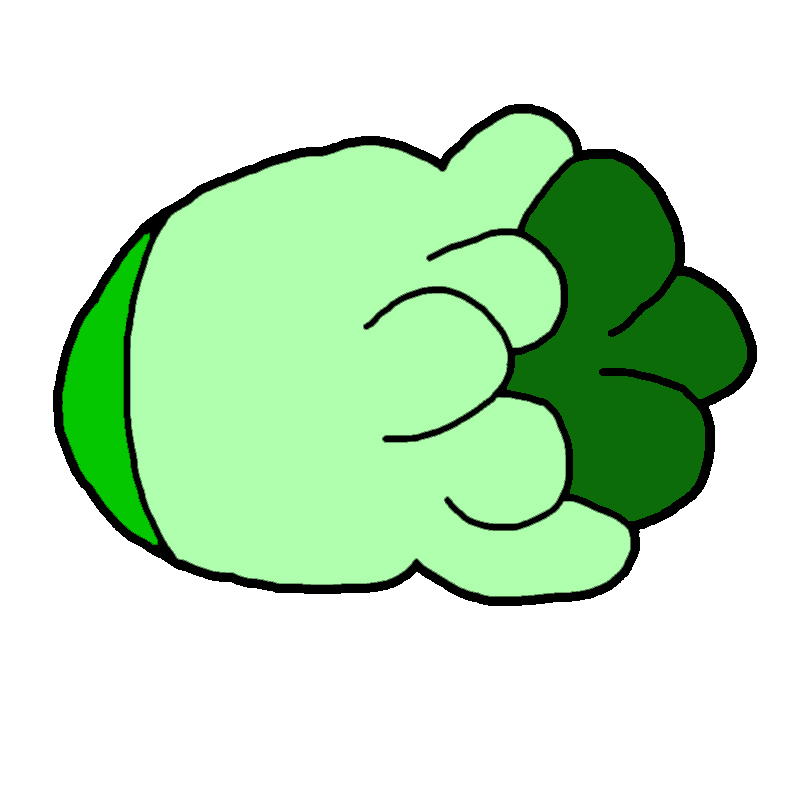

<!DOCTYPE html>
<html>
    <head>
        <title>color and opacity test</title>
        <script src="jspsych-6.1.0/jspsych.js"></script>
        <script src="jspsych-6.1.0/plugins/jspsych-html-keyboard-response.js"></script>
        <script src="jspsych-6.1.0/plugins/jspsych-image-button-response.js"></script>
        <link href="jspsych-6.1.0/css/jspsych.css" rel="stylesheet" type="text/css"></link>

        <style>
            .overlap1 {
                position:absolute;
                top: 50px;
                left: 50%;
                opacity:0.25;
                z-index:2;
            }
            .overlap2 {
                position:absolute;
                top: 75px;
                left: 50%;
                opacity:1;
                z-index:1;
            }

            #div-top{
                width:200px;
                height:200px;
                background:blue;
                position:absolute;
                top:0px;
                left:0px;
                z-index:1;
            }
            #div-bottom{
                width:200px;
                height:200px;
                background:green;
                position:absolute;
                top:20px;
                left:20px;
                z-index:2;
                opacity:0.5;}
        </style>
    </head>
    <body>

    </body>
    <script>
    
    var timeline = [];
        
    var image_mix = {
        type: 'html-keyboard-response',
        stimulus: function() {
            return "<div class='overlap1'></img></div>"
            + "<div class='overlap2'></img></div>"
            
        },
        choices: ["space"]
    };
    timeline.push(image_mix);


    jsPsych.init({
        timeline: timeline
    });
    
    </script>
</html>

